Intro.
时隔两年再访 Google 开发者大会。还是熟悉的场馆。熟悉的布置，但跟上一次的感受很不一样：
回望 2023 年夏天，ChatGPT 天下无敌。百度的文心一言刚刚对客。Qwen 静悄悄的开源。大家都在讨论：「中国在 AI 革命中已经落后了」[1][2][3]。不知道路在何方。
今天再看，中国的 AI 虽然仍在努力追赶，但是至少已经没那么慌，手里多少也有点弹药。
所以相比于前两周摩肩接踵、门票被黄牛炒上天的 WAIC，今年的 Google 开发者大会显得「冷静」一些。没有那么多媒体和闪光灯，一眼望去都是文化衫和双肩包。面孔也更年轻一些。
AI. 没货了是吧？
由于 Google I/O 2025 早已开过，Gemini 2.5 家族大家该体验的也体验过了。所以「集中展示 Gemini 家族」时大家的反应都很平淡：「我们都用了好久了。你们讲点新东西吧」。
反而是平时没太关心的开源模型 Gemma 让我感觉有点新奇。比如说社区贡献超 80,000 个衍生模型。比如说做视觉的 PaliGemma、For Coding 的 CodeGemma、做医疗的 MedGemma 等。比较好玩。
Gemma 3n 比较惊艳。这是个在端侧的多模态大模型。在开启 Skipped Paramters 和 Cached PLE 之后参数仅有 2B。并支持 Speech Recognition / Speech Translation 和最高 60fps 的视觉模态输入。如果能在 AI 眼镜等端侧设备上用到，还是挺有想象力的。
除此之外我真看不到什么新东西了（甚至 Gemma 也不新，只是我之前没关注）。
AI x 社会公益
Google AI 开发者社会公益这个主题更是看得我一脸问号。它拆了三个小故事：
- 一个是艺术家的作品《72 变》。「帮助不同身份背景的人们，包括残障人士和社交焦虑症患者，将内心的自我表达转化为流畅的艺术视觉效果」。实在有点过于艺术了我难以理解。
- 另一个是?敦煌大模型?。兰州大学的雍宾宾教授讲得很风趣。但是从技术上讲，就是个 Gemma 外挂 RAG 做敦煌问题的 QA 的事儿。甚至多模态也没有。
- 最重量级的一个，Google 跟北京联合大学的同学出品的《默筏》，是个开源项目。说白了也很简单。使用 Gemma 驱动的一个为渐冻症等沟通非常困难的人士做的一个输入设备。用 Gemma 的 prediction 能力替代了输入法的猜词，大幅简化了输入难度。并且支持预设角色设置和喜好（其实就是预录上下文）来实现更精准的输入推荐。
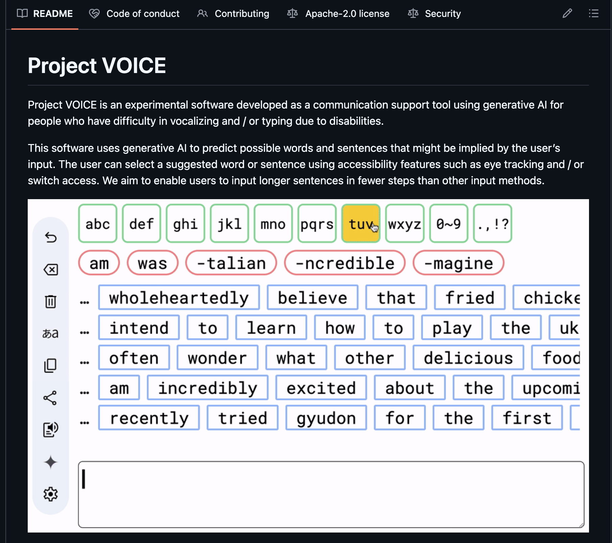
我原本预期还挺高。看完之后有点失望。跟工酉说吐槽说「这些玩意放到 WAIC 的摊位可能都没人看」。
特别是「默筏」，因为 Presentation 的叙事逻辑一直在侧重 AI，比如，「患者只要输入，我要听……《默筏》就会自动帮他补全?我要听任贤齐?」的叙述让我会有一点点担心伦理问题。因为这些渐冻症朋友，由于肌肉萎缩，想要完成一次沟通就已经很艰难。设想一下，如果他今天并不想听任贤齐，但是 AI 还是帮他表达了我要听任贤齐，而他需要付出更多的沟通成本来纠正。这其实是一种伤害。（我也去过任贤齐的演唱会。没有讨厌任贤齐的意思。
带着这个疑问我到摊位上找 Google 的同学交流了一下。发现其实并没有这个问题。Presentation 因为商业要求和篇幅所限，必须着重提 Gemma。所以很多细节没办法交代清楚。实际体验之后，发现《默筏》并不会代用户做任何决策，所有的动作仅是更好的推荐。包括通过拼音输入推荐词组，通过词组结合用户预录的人格化设置推荐意图。
同时也跟 Google 的 Kevin 同学接上了头，他是台湾省人。在谷歌做了多年无障碍。我跟他讲了蚂蚁这几年在做的无障碍的一些小事儿，他很高兴，也给了我很大鼓励：就算在谷歌，做无障碍也是非常难的事情。缺乏资源是常态。需要想办法跟各种品牌、市场的动作结合在一起。比如这次做《默筏》，按公司市场部的想法，更愿意放在 Gemma 和 Android 里作为 feature。所以也被迫在 Presentation 里用大篇幅讲 Gemma。但是他还保留了最后的一点坚持，也就是把这个项目开源。这样能帮助到更多的人。技术助力无障碍这条路，他从台北走到东京，已经坚持了很多年，现在有幸能着十五位同学一起在做无障碍。希望我们也能坚持下去。
客户端 Web AI Agent
一个完全在浏览器端运行的 AI Agent。需要浏览器支持 WebGPU，下载 2.5GB 的模型。
看 Demo 还是比较惊艳的。代码其实很简单。跟我们调大模型实现 Agent 没太大区别，只是从调用服务端的 LLM API 改成了调本地模型。
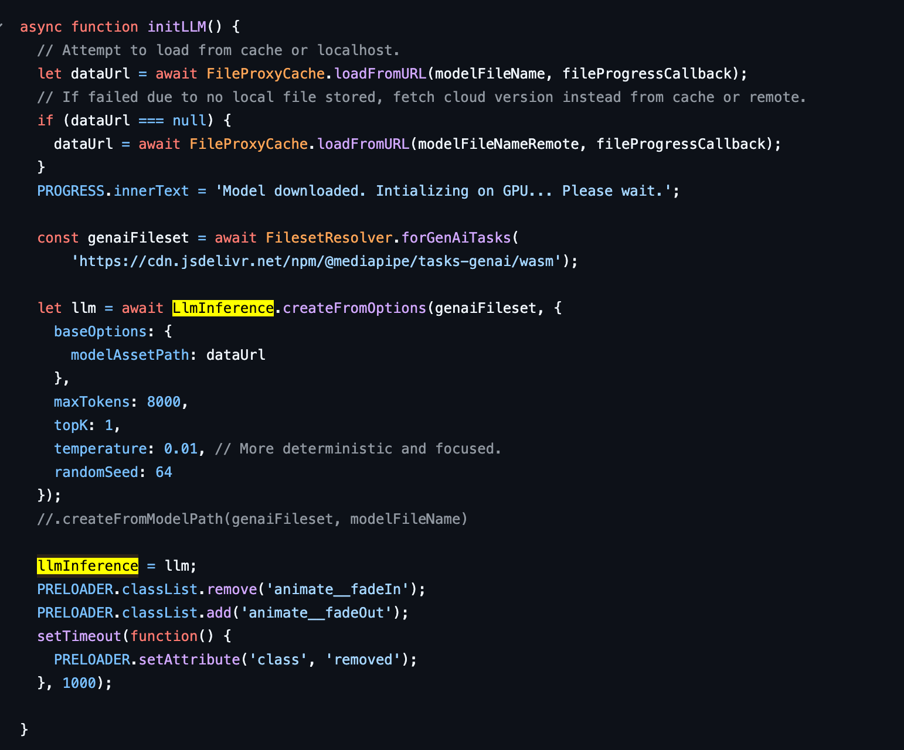
对于 Web App 的开发形态来说，其实可以带来一些新的想象空间。例如，当下的 Web App 厂商，如果要在自己的服务上添加 AI 功能，需要自己购买 GPU 的云服务或者订阅 LLM API。并需要复杂的前后端协同研发。
而客户端的 Web AI 提供了另一种范式的可能性：由前端开发者在纯前端实现 Agent 逻辑。当检测到用户的浏览器环境有端侧大模型可用，则开启端侧的 Agent 能力，使用用户端侧的算力为用户提供智能服务或者 Agent 体验。AI 基础设施的成本支付，从企业侧转移到用户侧。
这个范式也在「Google Chrome 内置 AI」的 Topic 中被证实。还是熟悉的老朋友，阿里国际的 Miravia，它使用 Chrome 内置的 Summarizer API 为商品的评论生成总结和摘要。这个功能是从传统的服务端 AI 服务迁移过来的。像这类简单的总结任务，放到浏览器跑，让前端同学自己开发、不再需要维护一个后端的 AI 接口。从成本和架构稳定性上都是非常好的方案。
其实这背后还隐藏着一个洞察：既然 Web App 是给人使用的，那么从前端触发的逻辑是足以完成服务的（废话。「GUI Agent」的实施路线可能是个双向奔赴：
- 一方面，大模型能力的持续进化，可能可以更好的识别应用的功能、理解服务、从而达成「GUI Agent」；
- 另一方面，Web App 可以通过一定的「自描述」和「服务暴露」，也就是「Build for Agent」促成大模型对自身的理解；
当然大家现在都想做前者，因为代表了「技术先进性」。后者更多的是脏活累活，并且现在还没有形成规范（W3C 在讨论了）。
Web. 只有码农最真诚
比起「冷静」的 AI 场，Web 场真的可以用「门可罗雀」来形容了。比如 Chrome 开发者关系团队的圆桌场，场下仅有十几个人，四个老外还在台上情绪饱满的输出。代入一下我可能会绷不住。
比较关注 Baseline 这个项目。其实也是老朋友了。底层数据来源于 W3C WebDX CG 的 web-features 项目。解决的问题老前端都懂：帮助开发者知道「哪些 Web Features 在主流浏览器能放心用」的问题。
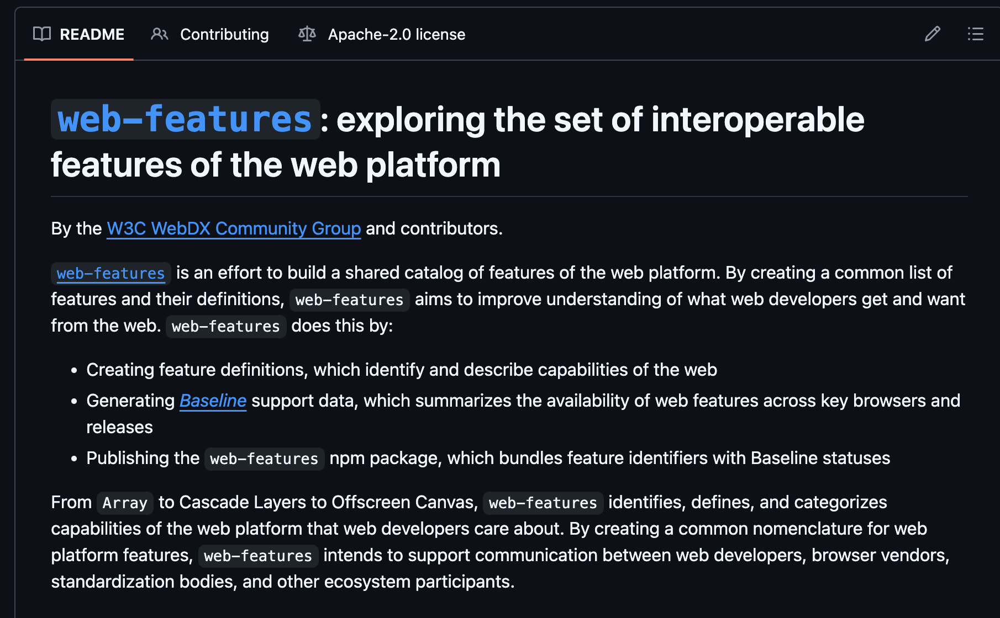
这其实源于千禧年浏览器大战的战场遗迹（什么三体叙事。当时浏览器厂商为了争抢份额，纷纷无视 Web 标准推出私有协议（典型的就是 IE6），前端为了让网站能最大兼容。不得不写很多的浏览器版本探测和防御措施。当时 jQuery 能火的一大原因，就是它通过封装，一定程度上抹平了不同浏览器的规范差异。
随着后续 W3C、WHATWG 等标准组织的努力，各家 Web 浏览器 API 的标准化好了很多，类似兼容 IE6 的奇葩问题少了很多。但是另一个问题又冒出来了：随着浏览器更新 Features 的频率越来越高，我现在到底可以放心用哪些 Web 特性。
早期，前端同学会按浏览器决策。比如「需要支持到 IE8」（我现在打出这句话都会 PTSD，比如「这个功能 Chrome Only 好了」
于是大家开始用 https://caniuse.com/ 和 MDN 来查某个 Web 特性的浏览器支持程度。这些工具会告诉你，某个 Feature 到现在为止，有哪些浏览器的哪些版本已经支持了这个特性。但是这个问题只解决了一半。另一半问题是，我的用户现在到底在用哪些浏览器。
蚂蚁内部不少团队其实会维护一个「我们的产品的用户使用的浏览器分布」的 DI 报表。用于辅助决策，到底哪些 Web 特性能放心用。然后约定俗成一个「最佳实践」。前端开发就是这么苦逼。
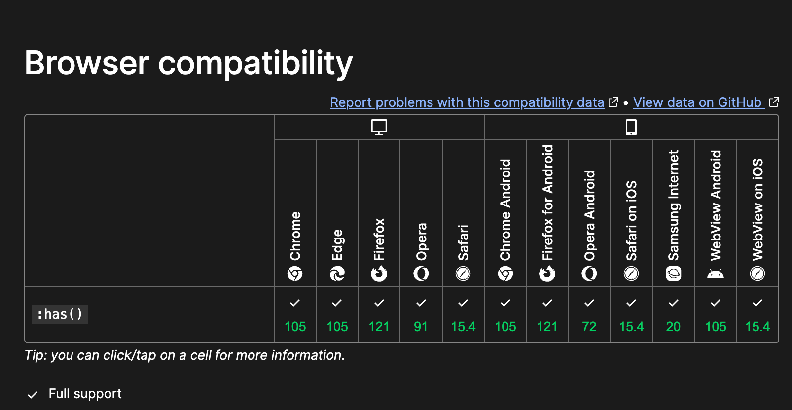
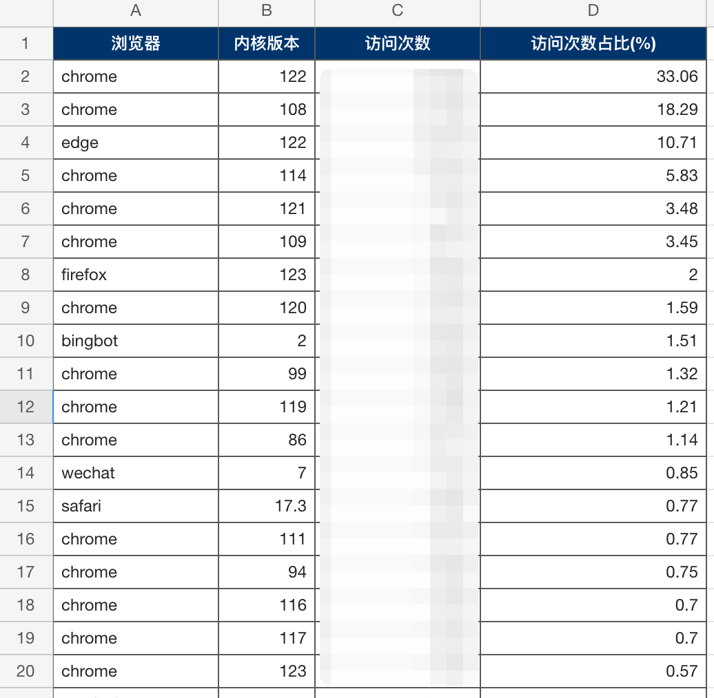
Web-features 和 Baseline 就是设计来解决这个问题的：通过一个严格的、数据驱动的标准，为现代浏览器的特性按年划一个基线。开发者可以基于这个基线来决策今天可以使用什么样的特性。也可以使用像 eslint 这样的检测工具来按基线做检测。极大的提升开发者体验。
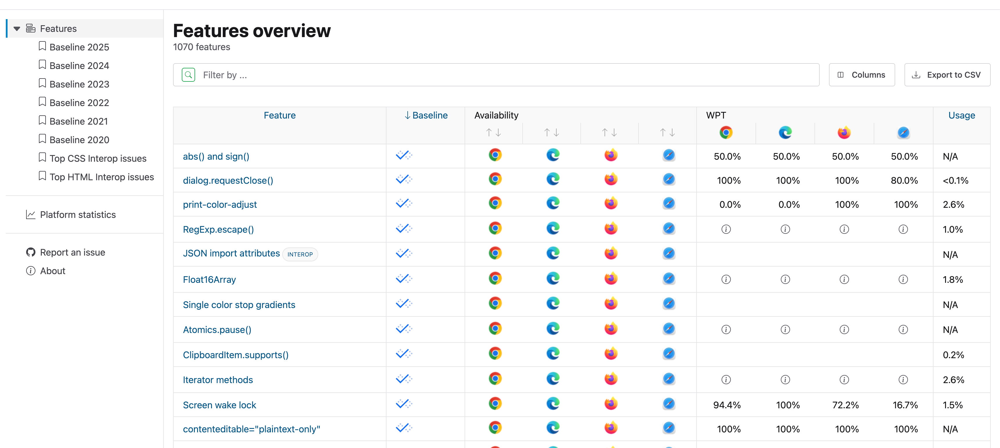
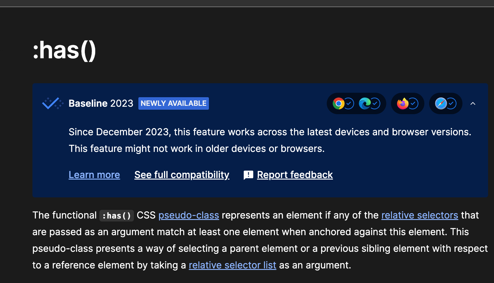
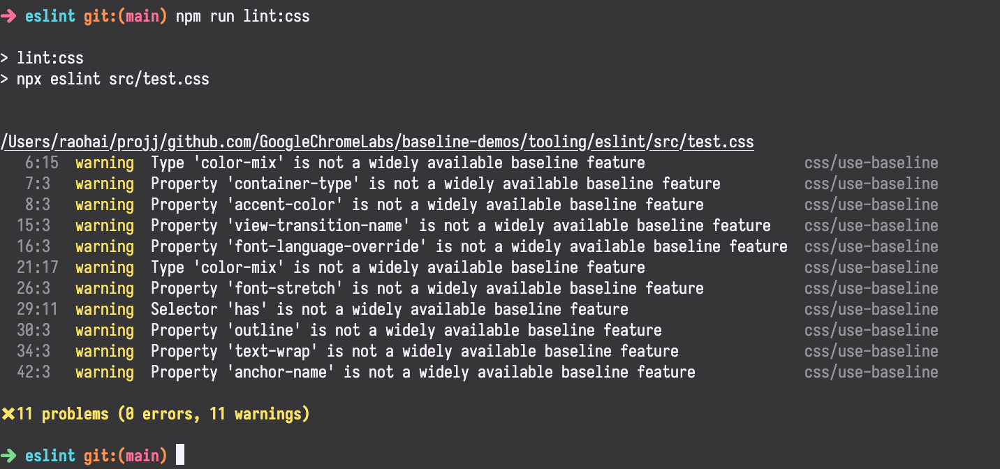
Baseline 项目蚂蚁内部其实可以 Follow，PC 的直接用就好了。H5 / 小程序可以根据钱包客户端的浏览器版本分布按一定周期公布蚂蚁的 Baseline。在 fishlint 等工具中做检测。一定程度上也能推进蚂蚁的 H5 应用能更快用上一些好用的 Feature。
题外话。比起其他场子里高大上的 Presentation 和极富感染力的演讲不同，Jeremy Wagner 老哥真的是朴实无华。上来就打开 VSCode 现场写代码，苦口婆心给大家秀 Feature。我不由在摸鱼群里感慨说，还是搞 Web 的真诚啊。
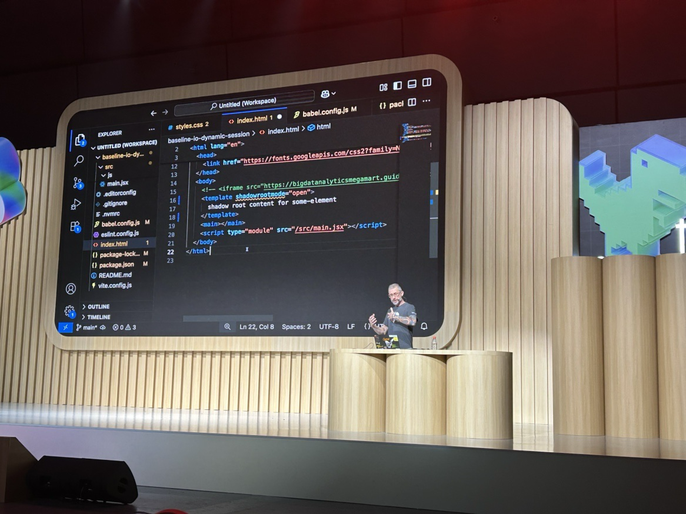
Cloud. 今夜我不关心模型, 我只想做 Agent.
第二天一早，来看「Agent is All You Need」。一进门就吓了一大跳，会场挤得水泄不通。
看来昨天的话说早了。不是 Google 开发者大会没人关注了，而是大家现在对 Agent 的关注度远高于其他。体验下来就是 Agent >>>> AI >>>> Web。Agent 有热度，AI 有技术，Web 只剩下真诚了😭
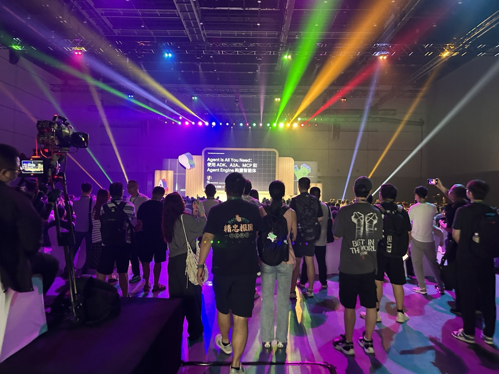
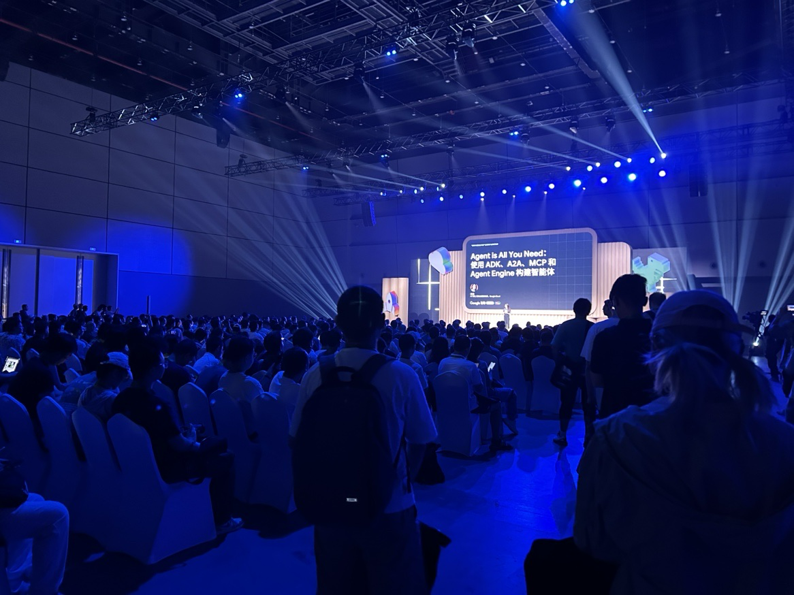
话题整体内容偏商务，先科普了一下什么是智能体，构建智能体的基础概念和范式，随后开始介绍谷歌的 AI SDK 套件、Google 的 A2A 协议和 MCP。最后是「客户成功」环节：请上来传音手机的 AI 中心总经理介绍传音怎么做 AI 手机，以及结合 Google Gemini 做的一些比如生图、模拟面试的 AI 功能。
冷知识，谷歌在中国其实还是有业务在做的。出海和云服务就是很重要的收入来源。每年 Google 开发者大会的一大目的就是在强调「Google 全链路生态高效驱动出海创业增长」这个叙事。
又一个冷知识，蚂蚁也是 Google 重要客户。
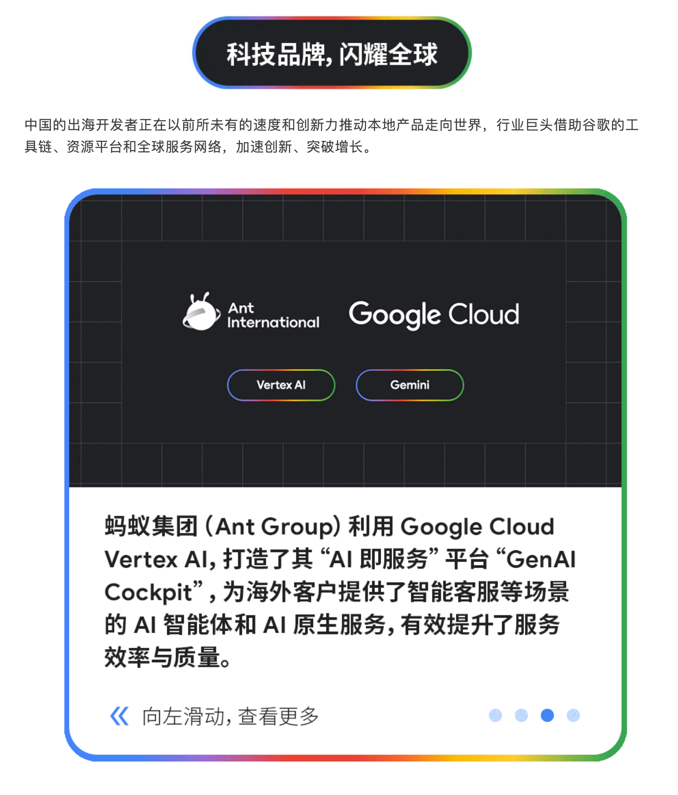
工作坊：Build Multi-agent Systems with ADK
特意去参加了工作坊。一方面是确实之前没关注过 ADK，另一方面是 Google 的 Workshop 真的设计得非常好，值得花时间去体验一下课程准备和流程设计。
进入工作坊后，扫码登记邮箱，会给分配一个 Google Cloud Lab 的临时工作空间和权限。进入之后是一个完整的教学 Lab。共有 6 个 Task，由浅入深的教你构造不同复杂度的 Multi-agent 系统。点左上角的「Start Lab」会启动一个 VPC。在里面写代码、运行脚本来完成教学。
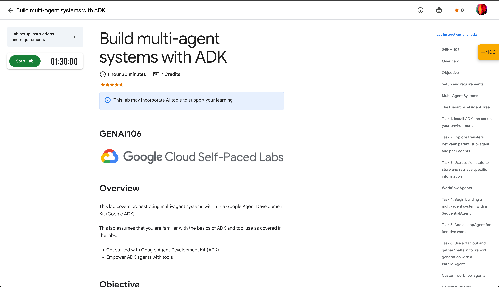
我主要关注 Google ADK 的抽象层次和编程界面（Programming Interface）。
ADK 的抽象层次比 LangGraph 更高一些。直接提供了 Agent的基础 Agent API 封装，description、instruction、callback、tools 几件套一应俱全。
还提供了高阶的 LlmAgent、基于 Workflow 的 SequentialAgent、ParallelAgent和 LoopAgent。比 LangGraph 通过 add_node、add_conditional_edges来构造 Graph 实现 Agent 的抽象程度高到不知哪里去了。
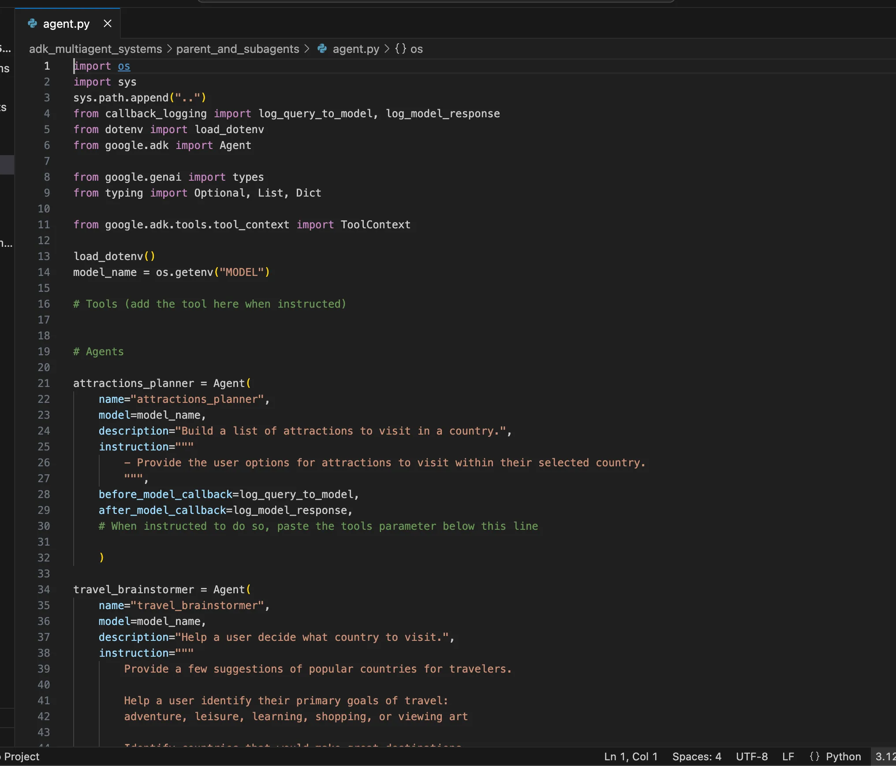
ADK 也提供类似 LangSmith 的开发者套件。PlayGround 和 Tracing 啥的该有也有。当然这个界面就比较拉胯。因为 Google 的最终目的还是卖云服务，所以这类功能你不能没有，但是不需要打磨这么精致。
会发现不同 Agent 框架的开发者套件其实不互通。如果有人愿意开发一套开源的 Agent Devtools 可能会有点市场。我们也在做对标 LangSmith 和 ADK 的 WohuSmith，其实还是有空间的。
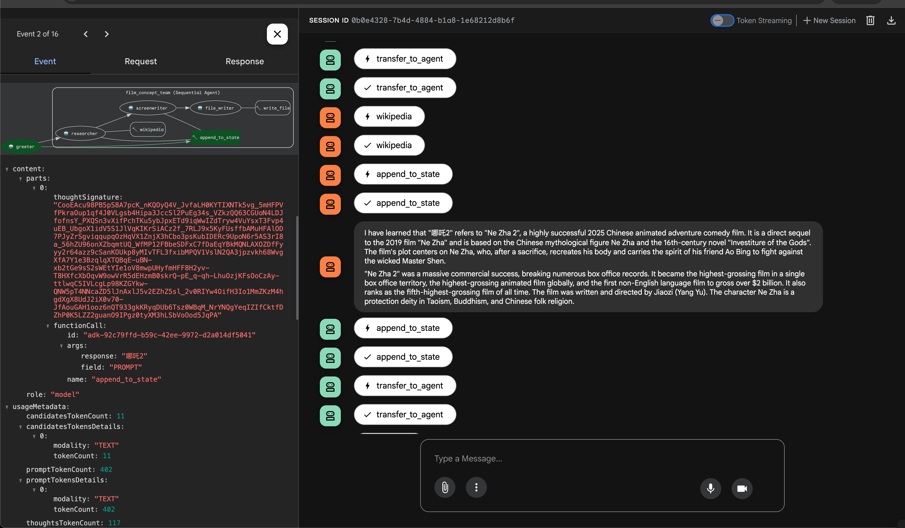
工作坊的几个 Task 都会附上 Agent 的架构设计图。
比如这个 Film Concept Team 的 Agent，架构其实非常简单。一个 Greeter 上来打个招呼，用户输入后， Researcher Agent 调用 Wikipedia tool 查询信息，然后开始写剧本。
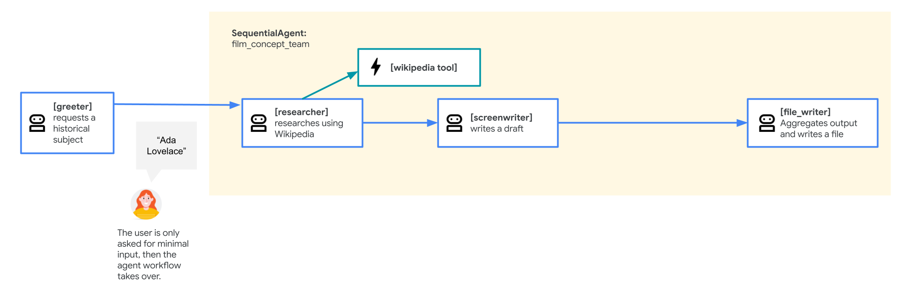
给这个 Team 进一步增加角色：
- 左边是 Researcher、Screenwriter 和 Critic 构成的三人小组：Researcher 负责搜集信息，交给 Screenwriter 写作剧本。交给批评家拷打。再让 Researcher 补充信息。构建一个 LoopAgent，持续这个循环，直到 Critic 认为可以了。交付给 Preproduction Team 做前期制作。
- Preproduction Team 里是两个可以并行的角色，Boxoffice Researcher 和 Casting Agent，所以用了一个 ParallelAgent 做并发调度。最后给到 filewrite，把整个 Film Concept Team 的产出写成报告。
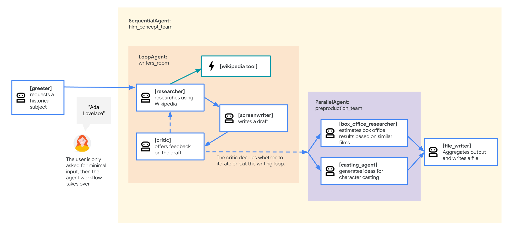
尝试了一下还是比较顺的。这样一个复杂度的 Agent 纯手写已经比较难了。就算使用 LangGraph 这样的框架，也要调挺久的。ADK 内置了 Google 搜索、Vertext AI 搜索、BigQuery 等 Tools，也兼容使用 LangChain 和 CrewAI 开发的 Tools，甚至内置 MCP 和 OpenAPI Tools。配合 Google Cloud 一键部署服务，确实会给出海的开发者很大的便利和信心。
题外话：Workflow vs. Agent 可能不是一个问题
今年年初到现在其实一直有 Workflow vs. Agent 的讨论[4][5]。我现在越来越觉得还是要 Trade-off（又端水了）。正如上面的 Film Concept Team 的例子。你说它 Workflow 吗，也挺 Workflow 的。但是也具有挺高的智能度。我觉得 WorkFlow 和 Agent 也是一个 Spectrum（我现在挺喜欢光谱论的），任务的确定性需求有多高、希望 AI 决策的自由度有多大，决定了整个智能体的架构方案是偏 Workflow 还是偏 Agent。需要架构师来做决策，而不是先辩论出一个银弹。
当然，随着 LLM 的能力越来越强，我们可能可以更少的构建 Workflow，更放心的让 AI 来做决策。这个还是需要相信的。
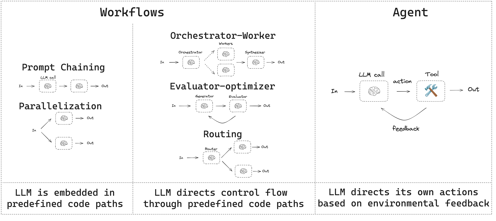
写到这里，我顺手用「Workflow vs. Agent Spectrum」作为关键词 Google 了一下， 发现了这篇文章：https://www.diagrid.io/blog/the-agentic-spectrum-why-its-not-agents-vs-workflows ，里面画的这个图深得我心。把它拷过来，作为观点的另一个声音🗣️。
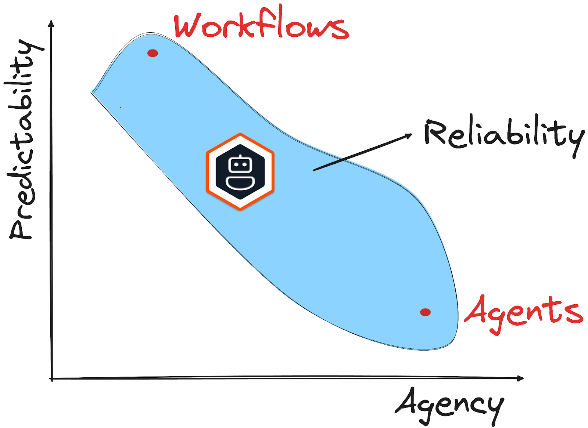
Conclusion. 某种割裂
也不算结论吧，逛完了有感而发。
AI 时代的大部分明星产品都是基于 Web 构建，前端同学想要适应 AI，花的成本会更低。因为一定程度上，大厂里，前端开发的范式、工具和知识体系与业界并不存在系统上的割裂。举个例子，前端同学不用花多少时间就可以基于互联网公开服务，使用最新的技术栈，上线一个带简单 CRUD 功能的 Web App。对接上 AI API，就可以开始做 AI 应用原型。
虽然不存在体系上的割裂，但是具体到工具链和生态，国内和海外的 Web 开发者实际上是有割裂的。国内的移动互联网的生态，流量入口已经是超级 App。而超级 App 的内置 WebView、Hybrid 等能力，在方便了开发者的同时，「代位」了浏览器和 Web。换言之，移动互联网时代，我们很难把微信小程序、支付宝小程序的开发者等同于 Web 开发者，因为他们完全不关心 Web，只关心微信给他们开了什么能力，它们在超级 App 里能用什么能力。
所以在谷歌开发者大会上，国内开发者甚少关心 Web 相关的内容。什么浏览器内置 AI，什么新的 Web UI 特性。不可能用上的。等微信支持了再说吧。
超级 App 生态对开发者心智和工具链的驯化，本质上是一种「技术舒适区陷阱」，它让前端开发者逐渐丧失对 Web 原生能力的敏感度，进而削弱了在 AI 时代快速迭代和创新的能力。
AI 和 Agent 也是同理的。如果未来我们脱离了 Coze 或者微信就不会搞 AI 应用的话，也是挺可怕的。反过来想，如果我是微信，我反而要促成「让国内开发者脱离了微信生态，就不会搞 AI 应用」。
我觉得对于个体而言，还是必须多往外看，尝试基于公开的云服务做一些小玩具，并且 Build in Public。如果我们离开了大厂提供的基础设施和超级 App，就什么也 Build 不了的话，对个体而言不是好事。